REP 76.97.1 清洁 每个 辊/WR 入口 组件/WR 出纸 组件 
参考 PL:PL 76.4, PL 76.5, PL 76.6, PL 76.7
Removal

执行IOT的[关机]步骤. 确认电源开关已关闭并拔掉电源插头.

执行 辊 清洁 每个 300KPV.
Gently wipe the rubber 表面 的 辊 using a water-wetted, tightly wrung soft cloth, 没有 pressing 下.
Be 非常 careful 不 to scratch ...的表面 the 辊.
打开前盖板.
拆卸 旋钮 (2b), 旋钮 (2d), 旋钮 (3b), 和 旋钮 (3d). (PL 76.5, PL 76.6, PL 76.7)
拆卸内盖板. (PL 76.1)
拆卸 入口 灯 组件. (REP 76.3.2)
拆卸 出纸 灯 组件. (REP 76.3.5)
Use 纸张 to protect the 窗口 零件/部分 的 ILS 入口 单元.
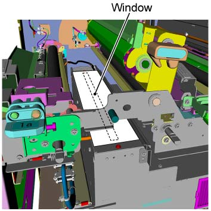
(图 1) ism476075
打开 杠杆 (1a) 和 清洁 ...的内部 the 上方 和 下方 ENT 滑槽.
打开 the ENT 滑槽 组件.
清洁 ...的内部 the 上方 和 下方 ENT 滑槽.
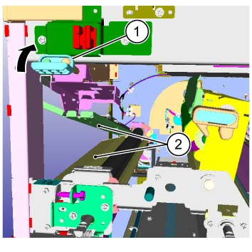
(图 2) ism476087
清洁 夹送辊 的 ENT 滑槽 和 Trans 2 滑槽 组件 在...上 顶部 侧面.
清洁 夹送辊 的 ENT 滑槽.
清洁 夹送辊 的 Trans 2 滑槽 组件.
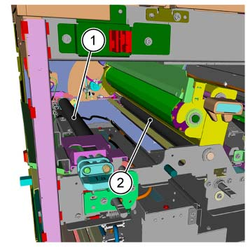
(图 3) ism476070
清洁 WR 入口 组件.
清洁 WR 入口 组件 Weld 通过 the opening of 框架.
自...以来 the WR Weld is polygonal, manually 移动 the surfaces 的 Weld 和 清洁 所有 the surfaces.
当...时 清洁 the 参考 板 sticker (white 和 yellow) 安装到 the WR Weld, 注意不要 touch the 参考 板 sticker 和/与 your bare hands.
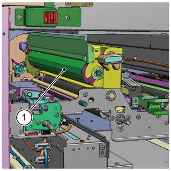
(图 4) ism476090
清洁 夹送辊 的 Trans 3 滑槽 组件 和 Trans 4 滑槽 组件 在...上 顶部 侧面.
清洁 夹送辊 的 Trans 3 滑槽 组件.
清洁 夹送辊 的 Trans 4 滑槽 组件.
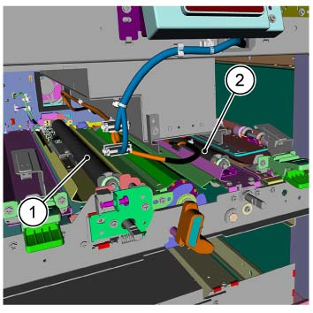
(图 5) ism476071
清洁 #1 和 #2 Drive Rolls on 下面.
清洁 Drive 辊 的 ENT 滑槽.
清洁 Drive 2 辊.
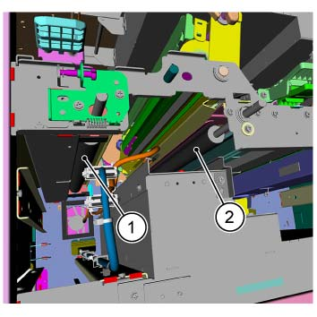
(图 6) ism476072
清洁 #3 和 #4 Drive Rolls on 下面.
清洁 Drive 辊 的 Trans 3 滑槽 组件.
清洁 Drive 4 辊.
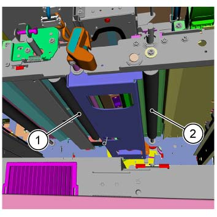
(图 7) ism476073
清洁 夹送辊 (x2) 的 出纸 滑槽 在...上 顶部 侧面.
清洁 夹送辊 (x2).
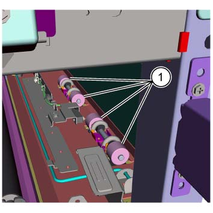
(图 8) ism476086
清洁 出纸 辊 on 下面.
清洁 出纸 辊.
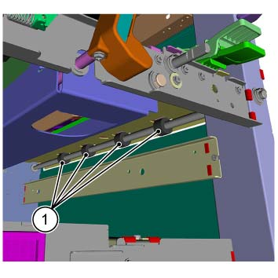
(图 9) ism476074
打开 the WR 出纸 框架.
释放 锁定 的 Handle.
打开 the WR 出纸 框架.
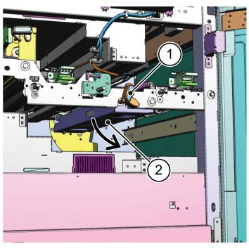
(图 10) ism476091
清洁 WR 出纸 组件.
清洁 WR 出纸 组件 Weld 通过 the opening of 框架.
自...以来 the WR Weld is polygonal, manually 移动 the surfaces 的 Weld 和 清洁 所有 the surfaces.
当...时 清洁 the 参考 板 sticker (white 和 yellow) 安装到 the WR Weld, 注意不要 touch the 参考 板 sticker 和/与 your bare hands.
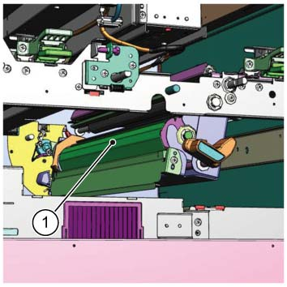
(图 11) ism476092